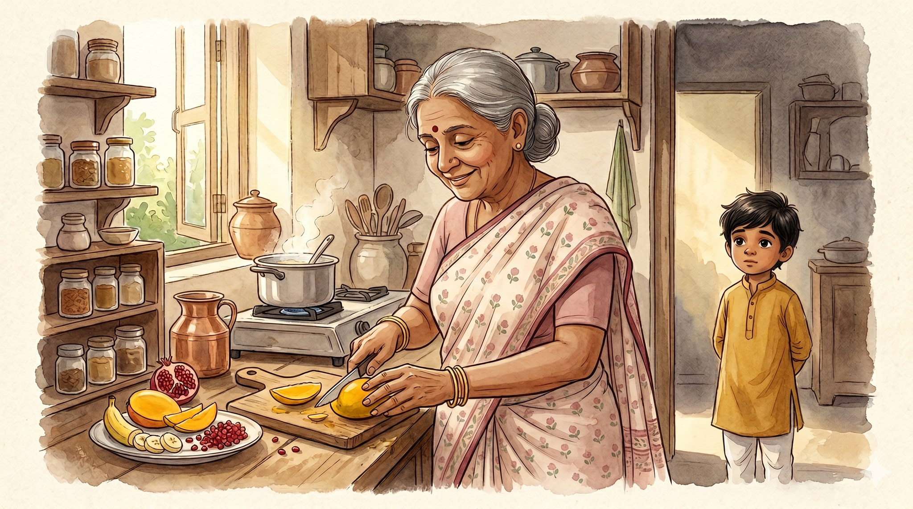
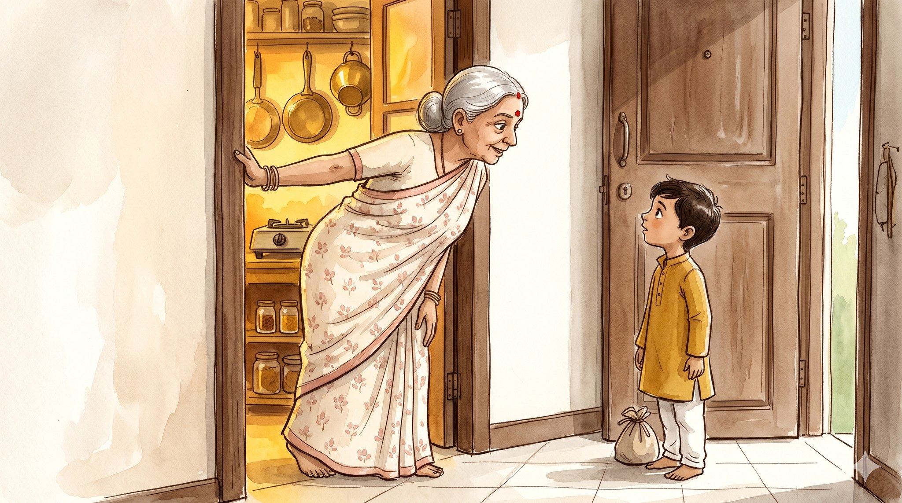
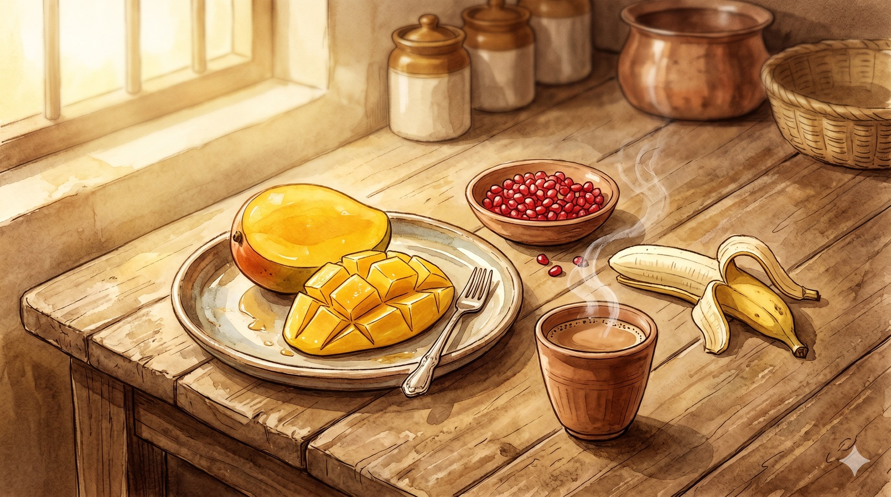
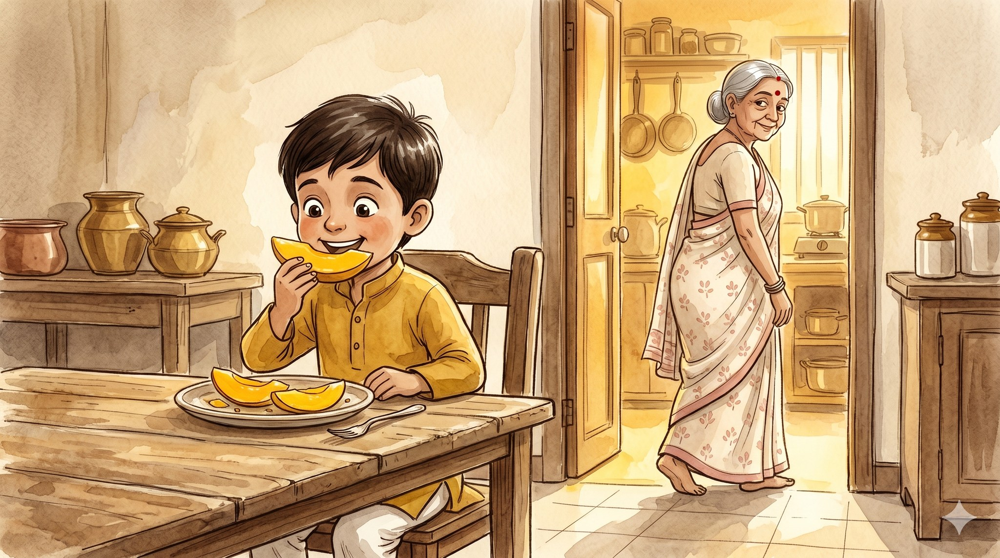
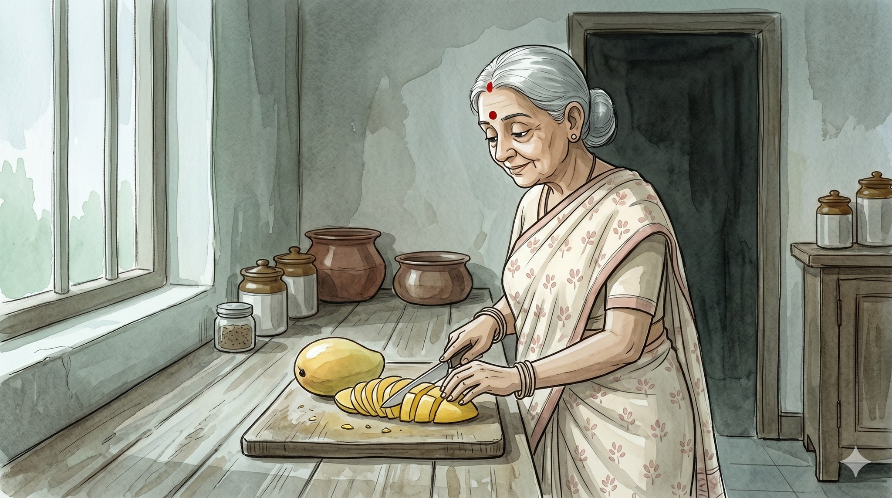
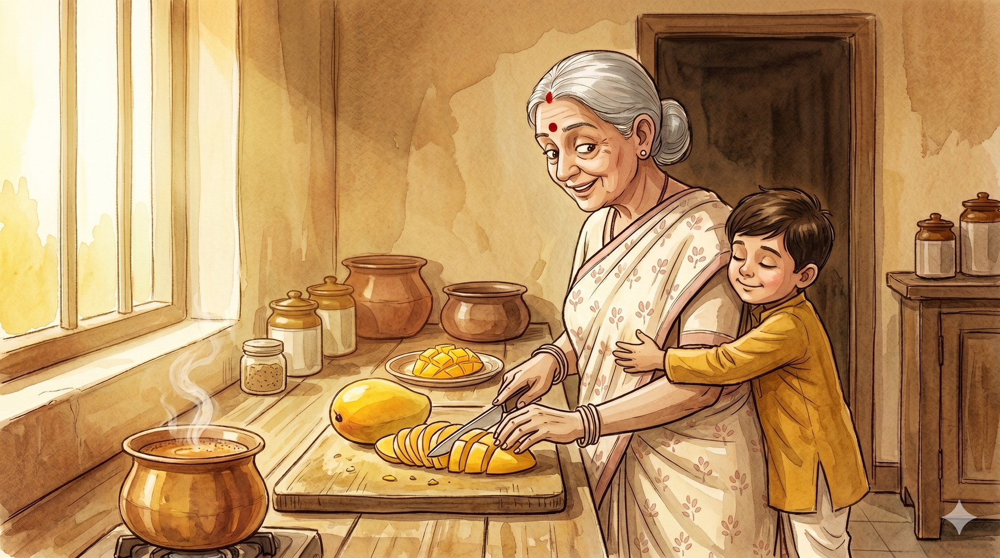

Kitchen of Love

A story for ages 5–9 about how love sounds like "did you eat?"

When you come to Ba's house, Ba does not say hello. Ba does not say how are you.
Ba leans out of the kitchen and says, "Did you eat?"
Every visit. Every time. That is Ba's hello.
"Yes, Ba. I ate before I came."
Ba nods, like that was the wrong answer, and disappears back into the kitchen.

A few minutes later, fruit appears on the table.
It just appears — the way rain appears, the way morning appears. A mango sliced into long gold crescents, with a little fork beside it. A handful of pomegranate seeds, red as jewels. A cup of chai, still steaming.
"Ba, I'm not hungry."
The plate stays.

So you eat it. Of course you eat it.
It is sweet and cold and exactly, perfectly ripe, because Ba checks the fruit every single morning and knows the very day it is ready.
Ba watches from the doorway. Just for a moment. Just long enough to see you take a bite.
Then Ba goes back to the kitchen, smiling a small smile you are not supposed to see.

Then one grey afternoon, you come over without calling. You step in quiet as a whisper.
Ba is in the kitchen and does not know you are there.
Ba is cutting a mango. Slowly. Carefully. The gold slices fall in a neat little row.
But nobody else is home. Nobody called. Nobody asked.
Ba is cutting fruit for whoever might come. Just in case.
And something quiet clicks into place, like the last piece of a puzzle.

You cross the kitchen and wrap your arms around Ba from behind.
"I love you, Ba."
Ba goes very still. Ba's ears turn pink.
Ba doesn't say it back. Ba never has. That was never Ba's language.
Ba pats your hand — once, twice. Then Ba picks up the knife.
And Ba cuts another mango.
Some grandmothers love with words. Some love with mangoes. Both are the same kind of love.
← Back to the library